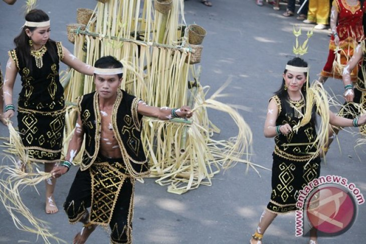
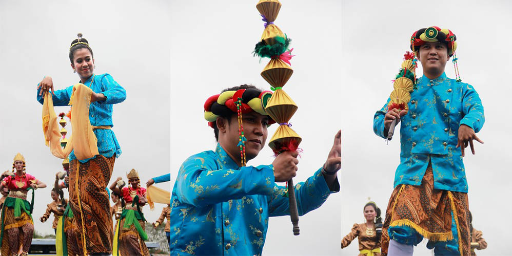
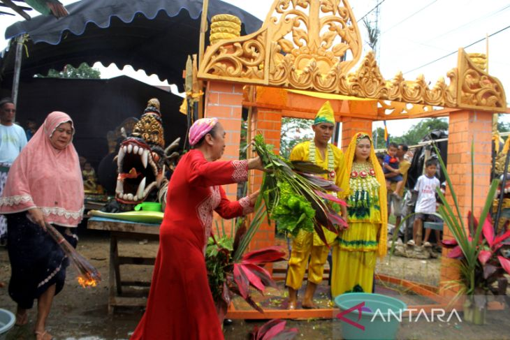
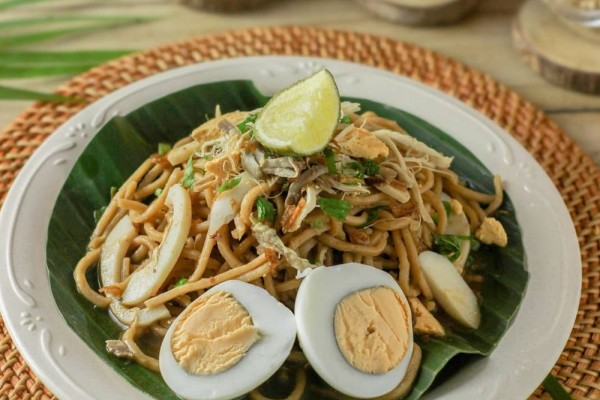
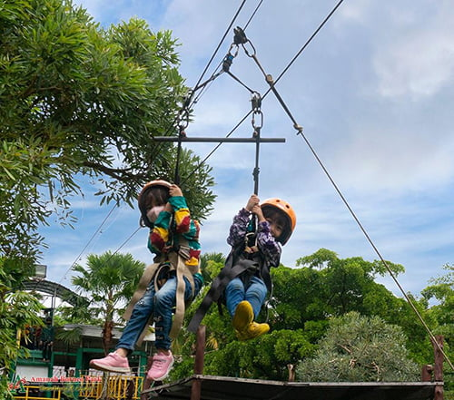

Sumatra
Nusa Tenggara
Maluku
Papua
Kalimantan Selatan
Kalimantan Selatan adalah salah satu provinsi yang ada di Indonesia yang terletak di pulau Kalimantan. Ibu kota provinsi Kalimantan Selatan adalah Kota Banjarbaru sejak tanggal 16 Maret 2022 menggantikan Kota Banjarmasin. Provinsi ini merupakan rumah etnis Banjar dan memiliki luas 38.744,00 km² dengan populasi ditahun 2020 berjumlah 4.087.894 jiwa, dan wilayah administrasi terbagi menjadi 11 kabupaten dan 2 kota.
Informasi Umum
| Nama Provinsi | Kode Wilayah | Kode Internasional | Singkatan Umum | Ibu Kota | Hari Libur | Lambang |
|---|---|---|---|---|---|---|
| Kalimantan Selatan | 63 | ID-BT | - | Banjar Baru | 4 Oktober 2000 |
Budaya
Rumah Bubungan Tinggi merupakan salah satu jenis dari Rumah Baanjung, yaitu rumah adat suku Banjar di kalimantan Selatan. Rumah ini bisa dibilang sebagai ikon Rumah Banjar karena jenis rumah ini adalah jenis yang paling terkenal. Rumah Bubungan Tinggi melambangkan hubungan persatuan dan harmoni dunia atas dan dunia bawah. Penghuni seakan-akan tinggal di dunia tengah yang diapit oleh dunia atas yang dilambangkan dengan atap / bubungan dan dunia bawah yang dilambangkan dengan bentuk rumah panggung / barumahan.
Pakaian adat Pangsi adalah pakaian yang digunakan dalam keseharian masyarakat banten khususnya mereka yang tinggal di pedesaan yang masih memegang teguh adat istiadat. Jika dilihat dari bentuknya, pakaian adat Pangsi hampir mirip dengan pakaian adat suku Sunda. Adat istiadat Banten besar dipengaruhi oleh adat Sunda, jadi tidak heran jika pakaian adatnya pun hampir mirip. Pakaian adat Pangsi juga digunakan untuk latihan silat tradisional khas Banten. Masyarakat Banten masih sering mengadakan latihan silat dan pakaian yang digunakan adalah pakaian adat Pangsi. Pakaian adat Pangsi digunakan dengan cara dililitkan secara menumpang mirip dengan memakai sarung.
Keunikan tarian tradisional Banten juga menjadi salah satu faktor mengapa banyak wisatawan tertarik untuk berkunjung ke daerah tersebut. Bahkan bukan cuma satu atau dua jenis saja, ada tujuh tarian Banten yang siap membuat Anda terpesona dengan keindahan gerak dan tampilan busananya.

Tarian Ngebaksakeun. Gerak tari ini mengadaptasi pijakan silat terumbu yang merupakan salah satu gaya bela diri dari Kabupaten Pandeglang. Biasanya, masyarakat Banten menyuguhkan tari ngebaksakeun untuk membuka suatu acara atau menyambut tamu penting.

Tarian tradisional Banten ini adalah buah kreasi dari seniman lokal bernama Beni Kusnandar. Tidak sendiri, Beni mengembangkan tarian unik ini bersama sang istri, Wiwin Purwinarti. Di sisi lain, lahirnya tarian ini juga menjadi wujud kepedulian Beni dan istri sebagai seniman Banten yang ingin terus melestarikan adat daerah.
Konten belum tersedia

Upacara Badudus menjadi upacara penutup dalam tradisi Babalian Tandik dengan menyiramkan air dudus. Mengutip buku "Utang Banjar dan Kebudayaannya" (2007), badudus merupakan upacara yang dilakukan saat masa peralihan dari remaja menuju dewasa.
Mandau adalah senjata tradisional Kalimantan Selatan yang telah menjadi identitas dari masyarakat suku Dayak. Jurnal berjudul Mandau Senjata Tradisional Sebagai Pelestari Rupa Lingkungan Dayak (2016) oleh Hery Santosa
Kuliner
Sajian mie ini hampir sama dengan mie-mie lain di Indonesia. Hanya saja, mie bancir disajikan dengan kuah yang gurih dan lezat.
Destinasi Wisata
Amanah Borneo Park (ABP) terletak di Jalan Taruna Bhakti, Palam, Banjarbaru. Ada rumah terbalik, jadi spot andalan bagi pecinta selfie, didalam bangunan terbalik berlantai dua itu ada 19 spot foto unik.